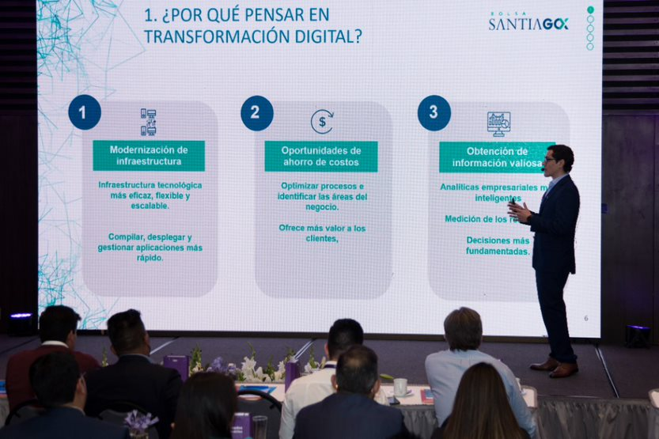
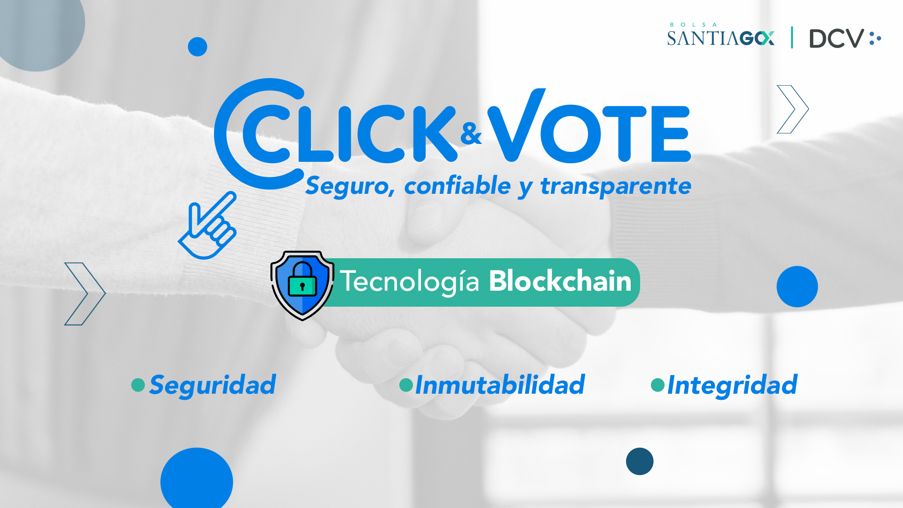

Ingeniero Civil Industrial apasionado por la tecnología, analítica avanzada, finanzas e inversiones.
Actualmente trabajando como Director Asociado de Tecnología en BTG Pactual.
Intro

Bienvenido
¡Hola, te doy la bienvenida a mi página web!
Mi nombre es Carlos Oliveros, soy un apasionado por la tecnología, la analítica y ciencia de datos,
siempre con la visión de su aplicación en un entorno práctico de negocios
buscando resolver problemas de la manera más eficiente y al mismo tiempo,
disruptivamente innovadora y tecnológica.
Me he desempeñado en el rubro Tecnológico-Financiero la mayor parte de mi trayectoria profesional.
Puedes leer más de mi experiencia aqui.
Intereses
Ciencia de Datos.
Matemática y estadística.
Transformación e innovación digital.
Algoritmos de Machine Learning e Inteligencia Artificial.
Tecnología Cloud: SaaS, PaaS, IaaS y CaaS.
Cloud computing.
Metodologías ágiles de desarrollo (Scrum, SaFe, entre otros).
Visualización de datos.
Implementación mejoras en el proceso de desarrollo de software.
Desde marzo 2023 me desempeño como Associate Director of Information Technology / Director Asociado de Tecnología de la Información .
En este rol estoy encargado del área de Sales & Trading de la Corredora de Bolsa.
Generación de lineamientos estrátegicos y tecnológicos.
Gestión portafolio de los proyectos tecnológicos de alto impacto.
Desde mayo 2022 hasta marzo del 2023 me desempeñé como Senior Products & Digital Innovation Lead Manager.
En este rol estuve encargado de promover la definición, implementación y mejora de nuevas iniciativas orientadas
a la transformación digital de productos, procesos y servicios bursátiles de la Bolsa de Santiago.
Algunas iniciativas implementadas :
Implementación arquitectura Big Data con lógica Microsoft Azure - Batch.
Diseño y habilitación de plataforma web de reportería analítica con información transaccional bursátil - Brain Data.
Generación y despliegue de Datalake Gen 2.
Migración servidores on premise a Cloud.
Generación zona de descubrimiento en nube para colaboración abierta - Cloud computing.
Generación de lineamientos de Market Surveillance.
De febrero a abril del 2022 me desempeñé como Exchange Products Manager Senior. En este rol lideré proyectos de alto impacto estratégico y de innovación bursátil.
De octubre 2019 hasta febrero 2022 me desempeñé como Exchange Products Manager. Fui responsable de liderar células multi disciplinarías bajo el rol de Product Owner
en desarrollo de proyectos TI bajo metodología Agile/Scrum.
Puedes ver el portafolio de mis proyectos selecionando:
Softwares y lenguaje de programación utilizados: Python (Jupyter Notebook), Microsoft SQL Server, Power BI, Bloomberg, JIRA y
herramientas de Microsoft Office.
Desde marzo a septiembre, 2019 me desempeñé como Analista de Inteligencia de Negocios bajo modalidad de Memorista de Titulo en el
Departamento de Inteligencia de Negocios.
Implementé y desarrollé modelos predictivos y descriptivos a través de herramientas de minería de datos y Machine Learning (Python), para cartera de colocaciones
de productos de consumo asi como Dashboards para visualización de los mismos (Qliksense).
Puedes ver mi trabajo: "Portfolio Management: Arquitectura, diseño e implementación de modelos de stock, venta y riesgo para
productos de Banca Personas en sector financiero" seleccionando:
Desde enero hasta marzo de 2019, realice Práctica Profesional en el Departamento de Investigación y Desarrollo de
Circulantes. Desarrollé e implementé métodos de validación estadística de procesos.
Softwares y lenguaje de programación utilizados: herramientas de Microsoft Office y macros.
Ingeniero Civil Industrial titulado con distinción máxima de la Universidad de Concepción,
con experiencia laboral como Product Manager y Product Owner (certificado PO CertiProf)
en Mercados Bursátiles y Financieros, enfocado en proyectos tecnológicos
y de innovación de alto impacto.
Con variados cursos en análisis financiero,
programación y actualmente cursando Máster de Tecnología de Información y Gestión en Pontificia Universidad Católica,
además, de certificación profesional en Data Science de IBM.
Profesional orientado a participar de proyectos con desarrollos tecnológicos desafiantes
y analítica avanzada enfocada en datos, cumplimiento de objetivos y resolución de problemas.
Puedes visualizar y descargar mi CV seleccionando:
1.Diseño y despliegue de Arquitectura Big Data Batch - MS Azure
Investigación, diseño e implementación de Plataforma Big Data Analytics, la cual permite
el tratamiento de datos a gran escala con el fin de propiciar
el descubrimiento de información, la gestión y analítica avanzada de datos.
A partir de esta plataforma y se generarán soluciones basadas
en Inteligencia Artificial, Machine Learning, Dashboards analíticas, API, entre otros.
2. Mejoras de Click & Vote - Votación electronica con tecnología Blokchain

Administración, actualización y despliegue de mejoras de Plataforma Click & Vote, la cual busca facilitar el proceso de votación
remota en juntas de accionistas, a través de una herramienta segura y
privada bajo la tecnología Blockchain, la que garantiza mayor
seguridad, confianza y trazabilidad de la información.
La plataforma utiliza tecnología Blockchain, que cumple principios fundamentales para garantizar
que el ejercicio de la votación respete los derechos de los votantes,
exigencias regulatorias y entregue la confianza al emisor de que todo el proceso se realizará de
forma íntegra y segura.
Puedes ver el webinar y presentación seleccionando:
Habilitación de una nueva modalidad de cotización cruzada (“Cross Listing”). A través de esta modalidad los inversionistas, tanto institucionales como individuales,
tendrán la posibilidad de comprar y vender valores Colombianos (en CLP y/o USD)
listados en Bolsa de Valores Colombiana, a través de una corredora de bolsa nacional y bajo las reglas locales directamente en la Bolsa de Comercio de Santiago.